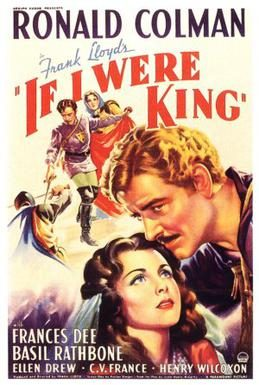

If I Were King
1938 film by Frank Lloyd
If I Were King is a 1938 American biographical and historical film starring Ronald Colman as medieval poet François Villon, and featuring Basil Rathbone and Frances Dee. It is based on the 1901 play and novel, both of the same name, by Justin Huntly McCarthy, and was directed by Frank Lloyd, with a screenplay adaptation by Preston Sturges.
Previous Showings
8 Runs • 6 Festivals
Original Billings: 1 run (November 10, 1938)
Original Run: November 10, 1938 (Thursday - Saturday)
All runs on record (8):
- November 10, 1938 (Thursday - Saturday) · Ronald Colman, Frances Dee
- October 9 - 10, 1991 · w/ We Live Again
- July 23 - 24, 1998 · summer98 · w/ The Mark of Zorro
- September 4, 2002 · summer02 · w/ The Beloved Rogue
- May 3 - 6, 2006 · Ronald Colman · w/ Under Two Flags
- May 22 - 25, 2010 · Spring 2010 · w/ A Tale of Two Cities
- June 24 - 26, 2015 · Summer 2015 Forty Classics from the Golden Age Including Kurosawa in August · w/ A Tale of Two Cities
- August 14 - 16, 2018 · Summer 2018 · w/ The Prisoner of Zenda